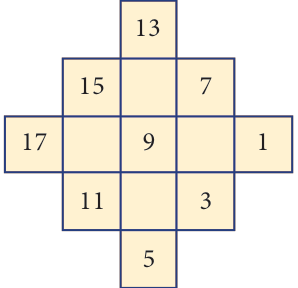
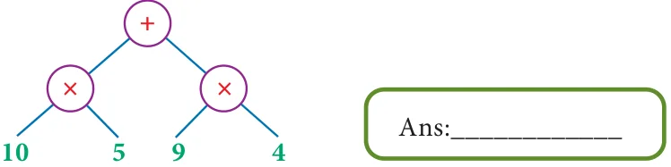
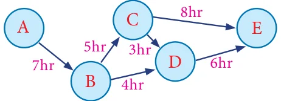
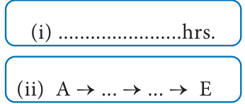

<!DOCTYPE html>
<html lang="en">
<head>
<meta charset="UTF-8">
<meta name="viewport" content="width=device-width,initial-scale=1">
<title>Chapter opener — Information Processing</title>
<meta name="description" content="Class 8 Mathematics · Information Processing · Chapter opener">
<link rel="icon" href="data:image/svg+xml,<svg xmlns='http://www.w3.org/2000/svg' viewBox='0 0 100 100'><text y='.9em' font-size='90'>📘</text></svg>">
<link rel="stylesheet" href="../../../assets/book.css">
<link rel="stylesheet" href="https://cdn.jsdelivr.net/npm/katex@0.16.11/dist/katex.min.css" crossorigin="anonymous">
</head>
<body>
<header class="topbar">
<div class="topbar-in">
  <div class="crumb">
    <span class="c1"><a href="../../../index.html">Library</a> · <a href="../../index.html">Class 8 Mathematics</a></span>
    <span class="c2">Information Processing · Chapter opener</span>
  </div>
  <a class="tb-btn" data-nav="prev" href="../../06-statistics/08-summary/index.html" title="SUMMARY">←</a>
  <details class="drawer"><summary class="tb-btn" title="Sections in this chapter">☰</summary>
<div class="drawer-panel"><div class="dh">Information Processing</div><a href="../01-chapter-opener/index.html" aria-current="page">Chapter opener</a><a href="../02-introduction-7.1/index.html">7.1 Introduction</a><a href="../03-principles-of-counting-7.2/index.html">7.2 Principles of Counting</a><a href="../04-set-game-7.3/index.html">7.3 SET - Game</a><a href="../05-map-colouring-7.4/index.html">7.4 Map Colouring</a><a href="../06-exercise-7.1/index.html">Exercise 7.1</a><a href="../07-fibonacci-numbers-7.5/index.html">7.5 Fibonacci Numbers</a><a href="../08-highest-common-factor-7.6/index.html">7.6 Highest Common Factor</a><a href="../09-exercise-7.2/index.html">Exercise 7.2</a><a href="../10-cryptology-7.7/index.html">7.7 Cryptology</a><a href="../11-exercise-7.3/index.html">Exercise 7.3</a><a href="../12-shopping-comparison-7.8/index.html">7.8 Shopping Comparison</a><a href="../13-packing-7.9/index.html">7.9 Packing</a><a href="../14-exercise-7.4/index.html">Exercise 7.4</a></div></details>
  <a class="tb-btn" data-nav="next" href="../../07-information-processing/02-introduction-7.1/index.html" title="7.1 Introduction">→</a>
  <button class="tb-btn" data-theme-toggle title="Toggle light / dark" aria-label="Toggle light or dark theme">◐</button>
</div>
<div class="progress"><span style="width:86.1%"></span></div>
</header>
<main class="wrap">
<div class="sec-head">
  <p class="eyebrow"><a href="../index.html">Chapter 7 · Information Processing</a></p>
  <h1>Chapter opener</h1>
  <p class="sec-meta">Textbook pages 1–2 · 8 figures</p>
</div>
<article class="prose">
<h2 id="s-information-7-processing">INFORMATION 7 PROCESSING</h2>
<h3 id="s-learning-objectives">Learning Objectives</h3>
<p>To determine the number of possible orderings of an arbitrary number of objects following certain procedures. To learn a SET game for developing logical thinking . To investigate the role of map colouring in representing and modelling of mathematical ideas. To observe the Fibonacci pattern in physical and biological phenomena. To choose the best method in finding the HCF of numbers. To understand how information can be processed in, encryption and decryption. To consider alternatives in shopping before making a purchase, calculate the unit price for each items and make purchase in limited budget. To understand how to pack things efficiently in a given space and find the optimal solution.</p>
<p>Recap</p>
<p>Before to learn, we recall the concepts like listing, counting, pattern of Fibonacci series and calculate the unit price of the products by answering the following questions</p>
<ul class="qlist">
<li><span class="mk">1.</span><span class="lt">Find the number of all possible triangles that can be formed from the triangle given below.</span></li>
</ul>
<figure class="fig wide"></figure>
<ul class="qlist">
<li><span class="mk">2.</span><span class="lt">Use the numbers given in the figure to form a 3 x 3 magic square.</span></li>
</ul>
<figure class="fig"></figure>
<aside class="sidenote"><p>Ans:</p></aside>
<figure class="fig side-fig"></figure>
<figure class="fig"></figure>
<ul class="qlist">
<li><span class="mk">3.</span><span class="lt">Convert the tree diagram into a numeric expression.</span></li>
</ul>
<figure class="fig"></figure>
<ul class="qlist">
<li><span class="mk">4.</span><span class="lt">(i) Find the total time taken by the bus to reach from A to E via B , C and D.</span></li>
<li><span class="mk">(ii)</span><span class="lt">Find which is the shortest route from A to E.</span></li>
</ul>
<figure class="fig"></figure>
<figure class="fig side-fig"></figure>
<ul class="qlist">
<li><span class="mk">5.</span><span class="lt">Connect the Fibonacci squares through diagonals by curve from corner to corner</span></li>
</ul>
<p>across each square to draw a Golden Spiral.</p>
<figure class="fig wide"></figure>
<p>FIBONACCI SQUARES</p>
<ul class="qlist">
<li><span class="mk">6.</span><span class="lt">When you plan to buy a shirt, one shop offers a discount of `200 on MRP `1000 and</span></li>
</ul>
<p>another shop offers 15% discount on the same MRP. Where would you buy?</p>
<ul class="qlist">
<li><span class="mk">7.</span><span class="lt">An amusement park offers a package deal of 5 rides for `130. If 1 ride normally costs</span></li>
</ul>
<p>`30, how much will you save by taking advantage of this special deal?</p>
</article>
<nav class="pager"><a class="" data-nav="prev" href="../../06-statistics/08-summary/index.html"><span class="dir">← Previous</span><span class="t">SUMMARY</span><span class="ch">Statistics</span></a><a class="nx" data-nav="next" href="../../07-information-processing/02-introduction-7.1/index.html"><span class="dir">Next →</span><span class="t">7.1 Introduction</span><span class="ch">Information Processing</span></a></nav>
</main><footer class="site">Generated from the source textbook PDFs · text, figures and exercises belong to their respective publishers.</footer><script defer src="https://cdn.jsdelivr.net/npm/katex@0.16.11/dist/katex.min.js" crossorigin="anonymous"></script>
<script defer src="https://cdn.jsdelivr.net/npm/katex@0.16.11/dist/contrib/auto-render.min.js" crossorigin="anonymous"
  onload="renderMathInElement(document.body,{delimiters:[
    {left:'\\(',right:'\\)',display:false},
    {left:'$$',right:'$$',display:true},
    {left:'\\[',right:'\\]',display:true}],throwOnError:false,ignoredTags:['script','noscript','style','textarea','pre','code']})"></script>
<script src="../../../assets/book.js"></script>
<script defer src="../../../../assets/search.js?v=1789782769"></script>
<script defer src="../../../../assets/screenshot.js?v=2"></script>
</body>
</html>
